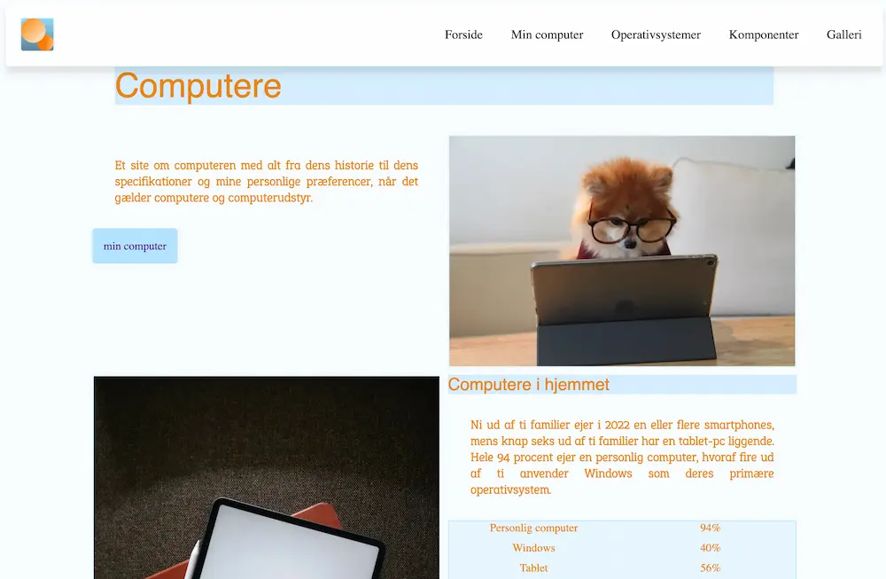

GRUNDLÆGGENDE WEB
Vores allerførste rigtige tema på 1. semester. Her blev vi bla. introduceret til Visual studio code, html og css. Vi blev også præsenteret for flere forskellige brainstorm øvelser, der ledte os videre ind i den idégenererings proces, der ligger før kodningen af et website.
Men ingen kreativ proces uden figma, som vi også fik stillet til opgave at blive dus med, ved at lave nogle designøvelser. I figma fik vi lavet vores første moodboards, styletiles og wireframes, hvor undervisningen om diverse designkonventioner, gestaltprincipper og fonte, skulle bruges.
Oven i hatten, kom alle de forskellige webformater som billeder kan formateres i, som vi lærte at ændre i squoosh. Vi testede afslutningsvis vores skills, med en foto-opgave.
PRØVEN
Hallvejs igennem temaet, begyndte vi på studiestartsprøven, der så småt nærmede sig. Her skulle vi via kode, placere udleveret indhold og billeder, i på forhånd designede wireframes. Udover at strukturere indholdet korrekt i html, skulle vi også implementere links og style vores site i CSS (Cascading Style Sheets).
LINKS
Website:
https://fionaheyns1.github.io/mobilsite_/Repository:
https://github.com/FionaHeyns1/mobilsite_.git